Maryland MEMS & Microfluidics Laboratory
The Maryland MEMS and Microfluidics Laboratory (MML) develops microscale technologies for applications in the physical, biological, and clinical sciences. Current research areas include microfluidic-enabled platforms for scalable synthesis of lipid nanomedicines and vaccines, nucleic acid diagnostics, cancer immunology and immunotherapy, and aerobiology.
The MML resides within the Department of Mechanical Engineering, and is a member laboratory of the Fischell Institute for Biomedical Devices. The MML is affiliated with the Dept. of Bioengineering and the Dept. of Chemical and Biomolecular Engineering, together with the Maryland Nanocenter, the Greenebaum Cancer Center, and the Maryland Robotics Center. Microfabrication is performed using dedicated MML cleanroom facilities, and in the UMD Nanocenter FabLab.
Recent News
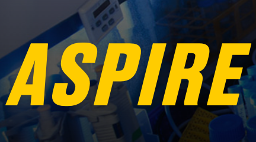

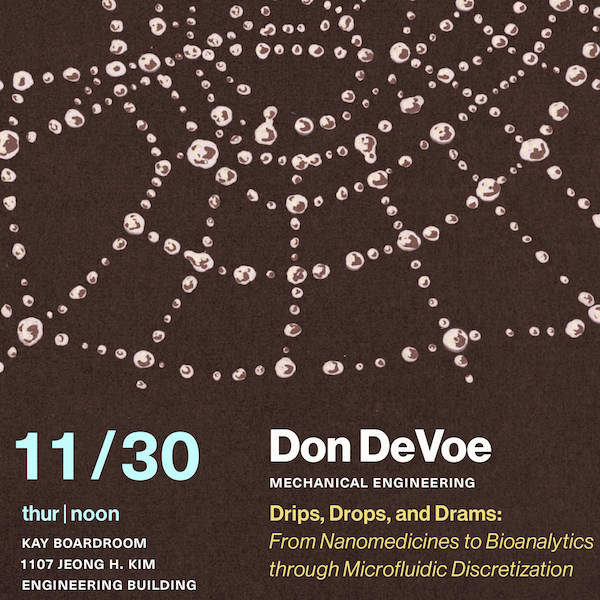
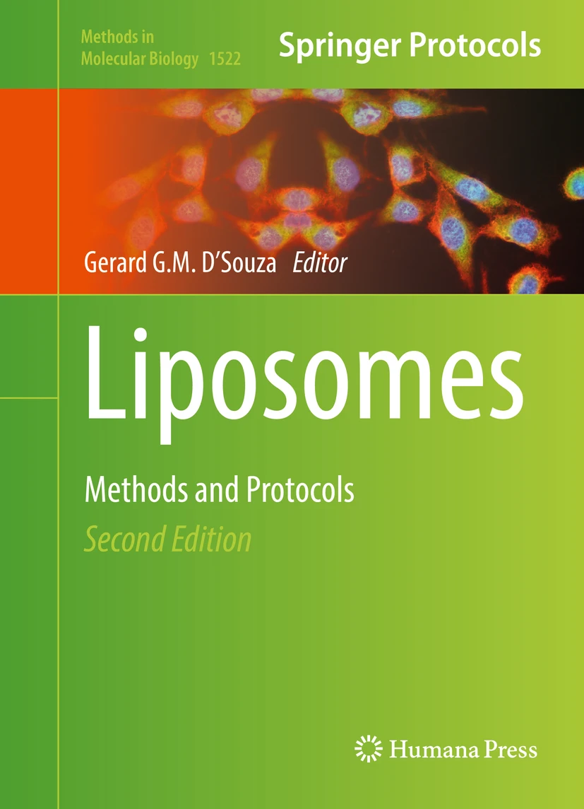
Jung Yeon Han publishes book chapter detailing microfluidic-enabled liposome synthesis process in Liposomes Methods and Protocols
Research
- Bioaerosol Analysis
- Portable Diagnostics
- Cancer immunotherpy
- Bacteria Testing & AST
- Nanomedicine Synthesis
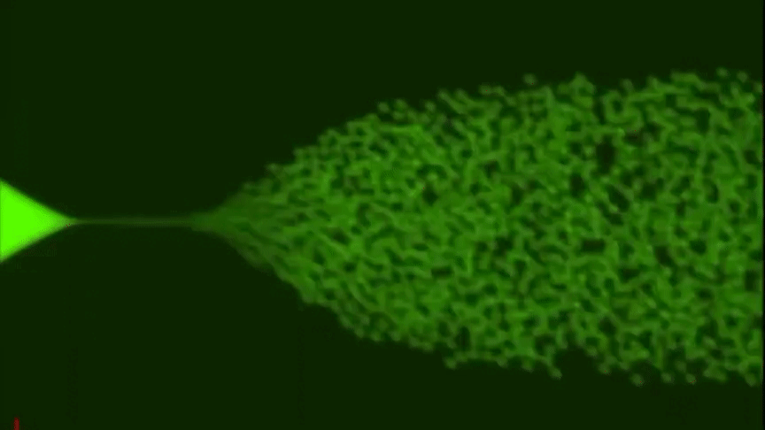
Synthetic bioaerosol generation
{kind=link}
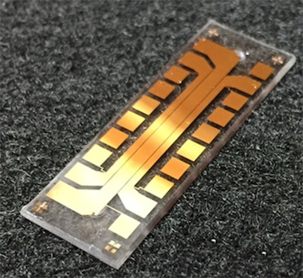
Thermoplastic PCR chip with integrated temperature control
{kind=link}
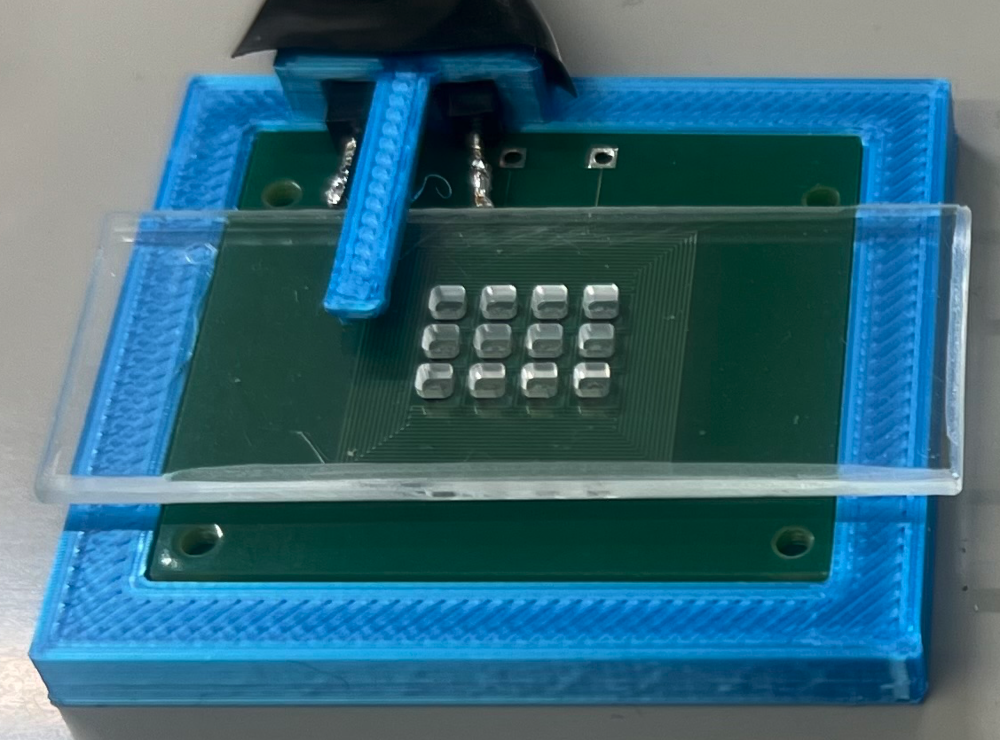
Compact thermocycler for portable nucleic acid amplification
{kind=link}
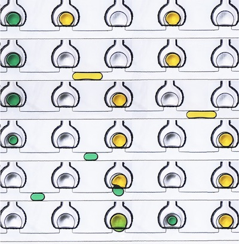
Membrane displacement trap chip
{kind=link}
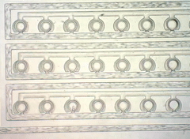
T cell loading into an MDT array
{kind=link}
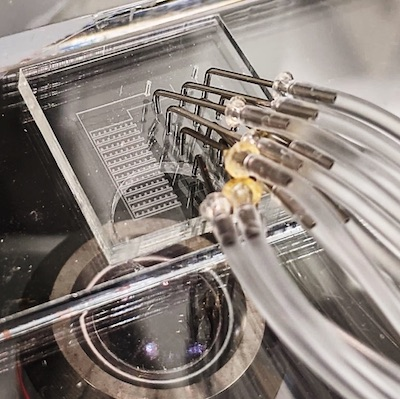
Membrane displacement trap chip in operation
{kind=link}
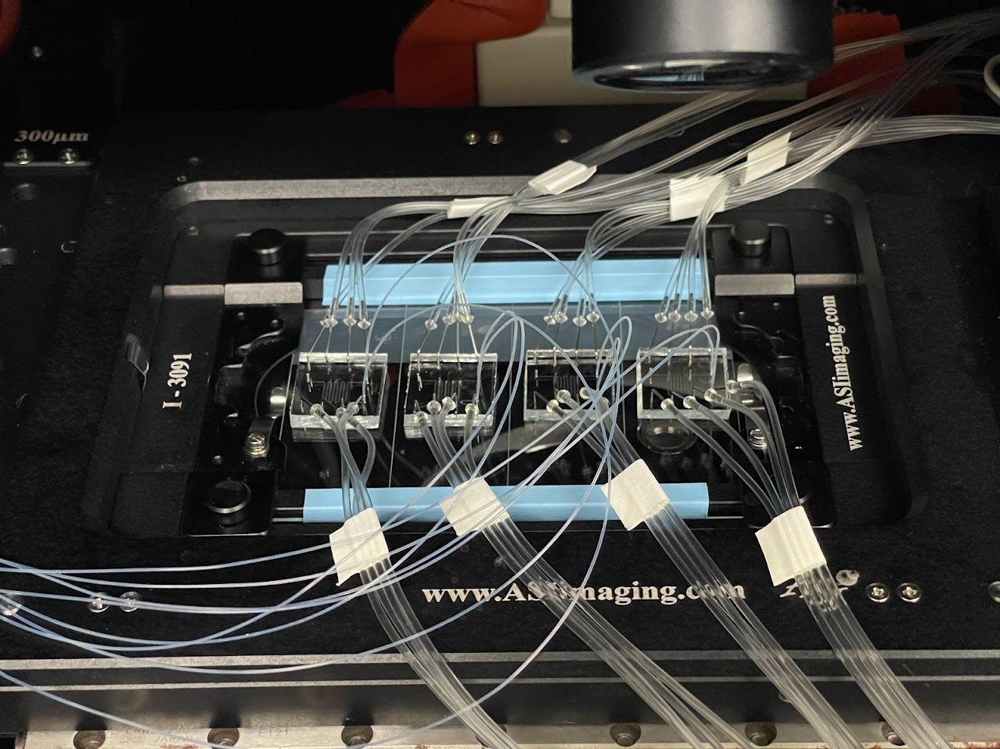
T cell / tumor cell co-culture chips
{kind=link}
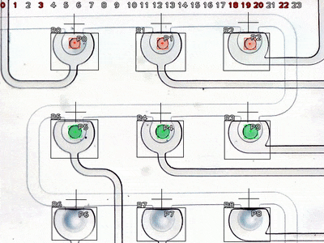
Vision system control for droplet manipulation
{kind=link}
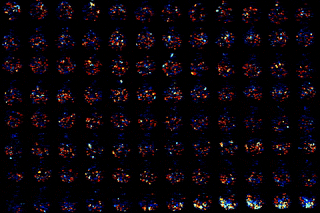
Tumor / T cell colocation dynamics
{kind=link}
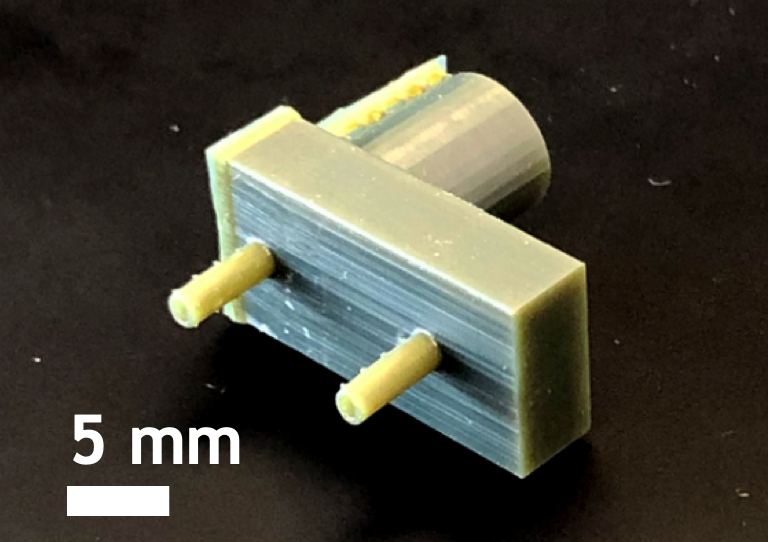
Microfluidic vortex focusing element for monodisperse liposome formation
{kind=link}
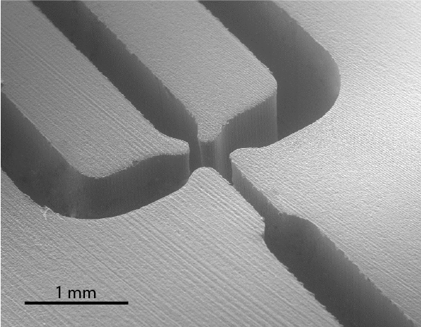
Flow focusing zone in a 3D printed chip for high throughput liposome synthesis
{kind=link}
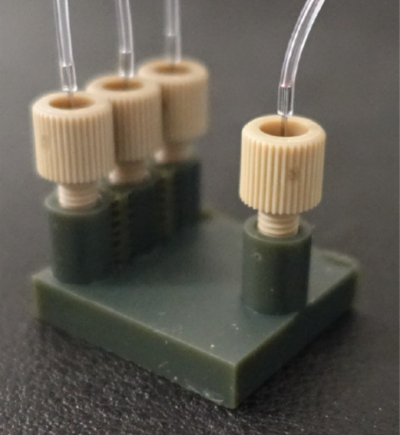
3D printed hydrodynamic flow focusing chip
{kind=link}
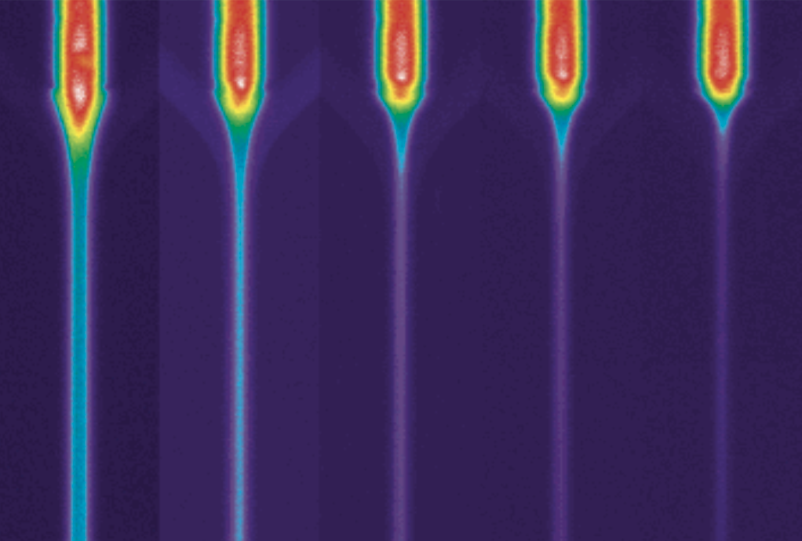
Controlling the diffusion length scale for precise nanoparticle size control
{kind=link}
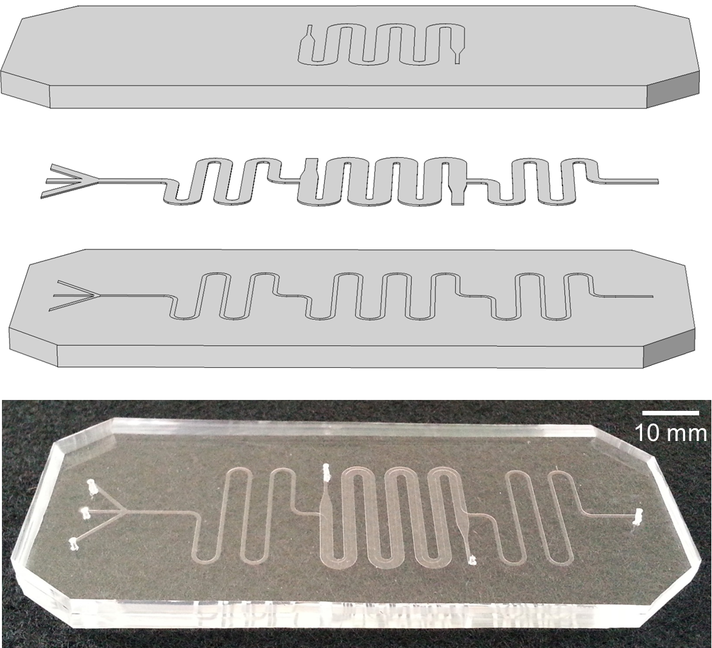
Integrated microfluidic chip combinine liposome formation and counterflow microdialysis for active drug loading
{kind=link}
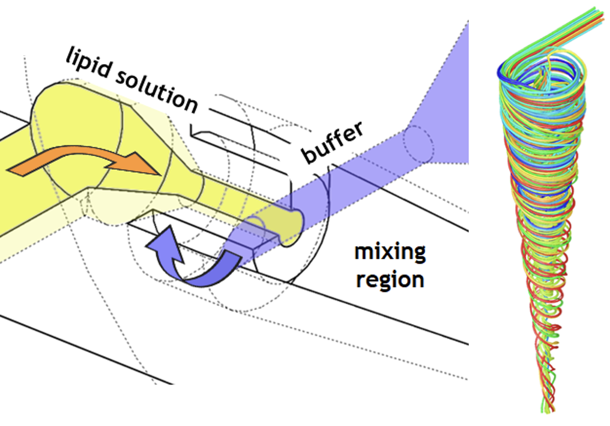
Microfluidic vortex focusing combines diffusive and convective mixing for precise LNP size control at high throughput
{kind=link}
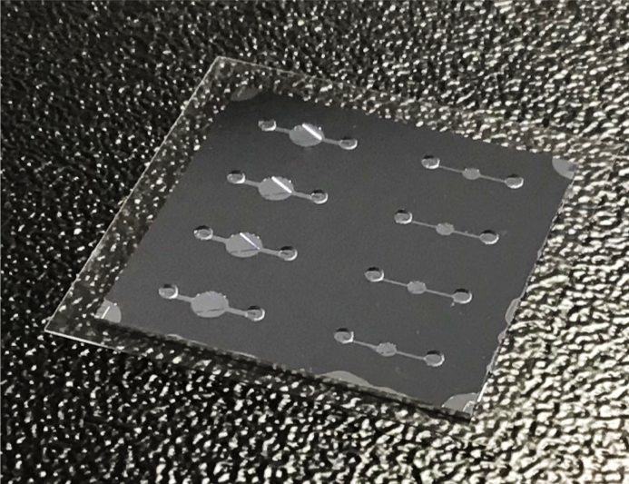
Nanogap trap chip for bacteria isolation
{kind=link}
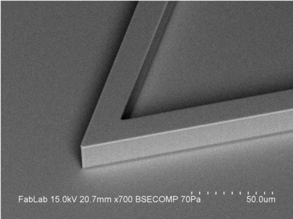
Focusing tip of an individual nanogap trap for bacteria isolation
{kind=link}
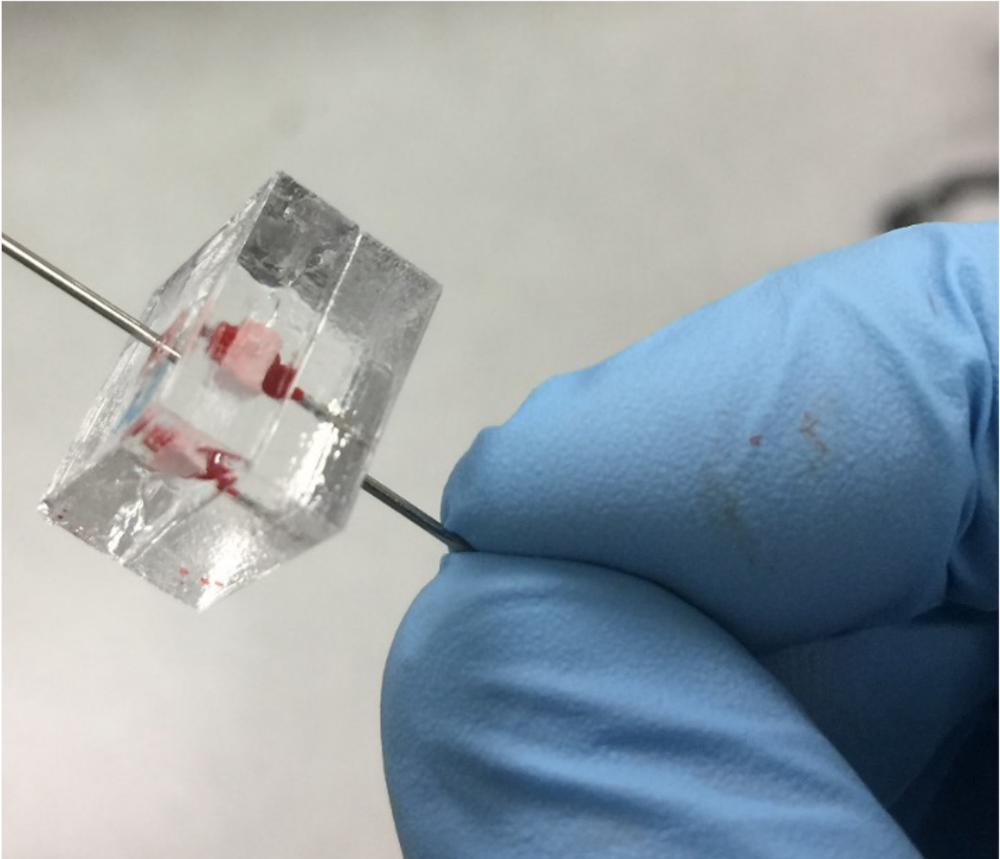
Porous silica monolith cartridge enabling selective blood cell lysis and bacteria isolation
{kind=link}
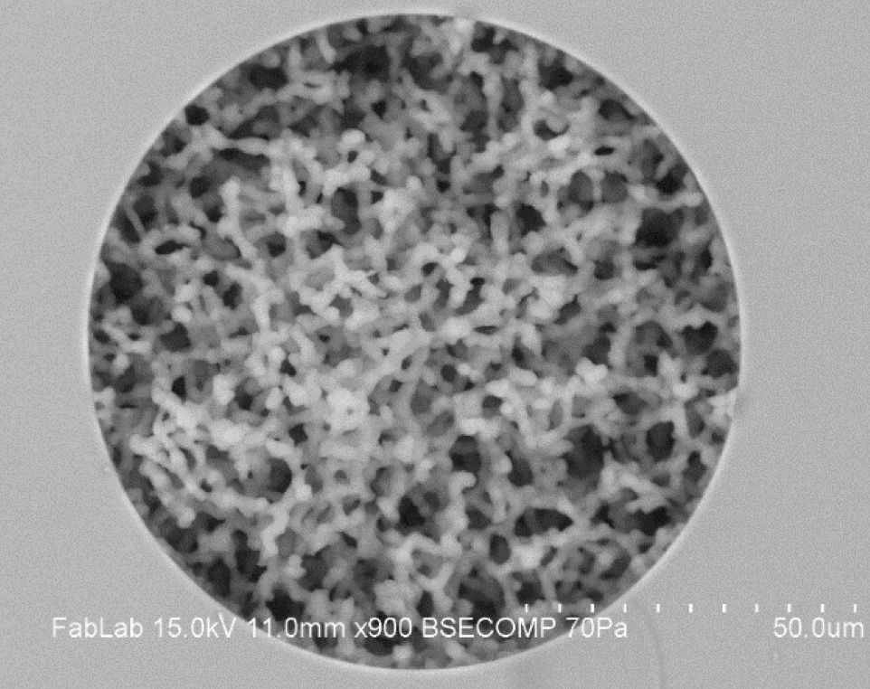
Microstructure of a porous silica monolith for bacteria isolation from whole blood
{kind=link}
People
MML researchers are a diverse group with affiliations spanning the Departments of Mechanical Engineering, the Fischell Department of Bioengineering, and the Department of Chemical & Biomolecular Engineering at the University of Maryland. All MML personnel are members of the Fischell Institute for Biomedical Devices.
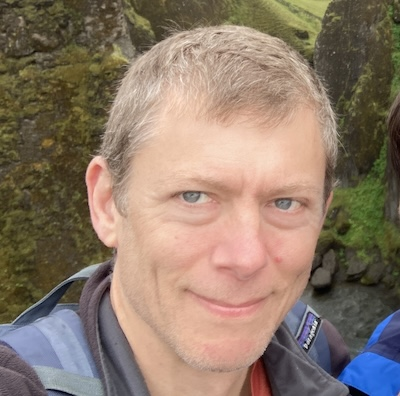
Don DeVoe
2020 Wilson H. Elkins Professor
MML Director
Jaesung Lee
Postdoctoral Fellow
Reagent integration for portable nucleic acid assays
Proma Bhattacharya
Postdoctoral Fellow
Microcyclones for bioaerosol fractionation and novel bioaerosol sampling technologies
Kathryn Pacheco
Ph.D. Student
Reagent integration and miniature mechatronics for portable nucleic acid diagnostics
Michael Yeh
Ph.D. Student
Membrane displacement traps for immunodynamics and adoptive cell therapy
Siddharth Raghu Srimathi
Ph.D. Student
Digital focus assays for rapid virus quantification
Sima Mehraji
Ph.D. Student
Electrokinetic concentration and integrated microdialysis for extracellular vesicle therapeutics.
Ethan Rosenfeld
MS/BS Student
Compact and automated technologies for nucleic acid amplification and bacteria identification.
Mikhail Labar
Undergraduate Researcher
Integrated ultrasonics for bacteria lysis and sample preparation.
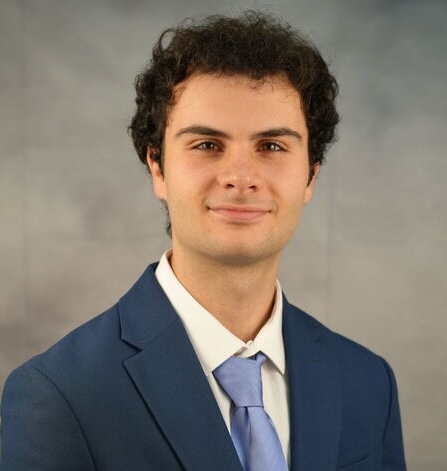
Juan Camarero
Undergraduate Researcher
.
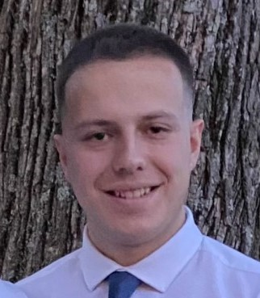
Vincent Throneburgh
Undergraduate Researcher
.
Elan Rosenberg
Undergraduate Researcher
.
Recent MML Alumni
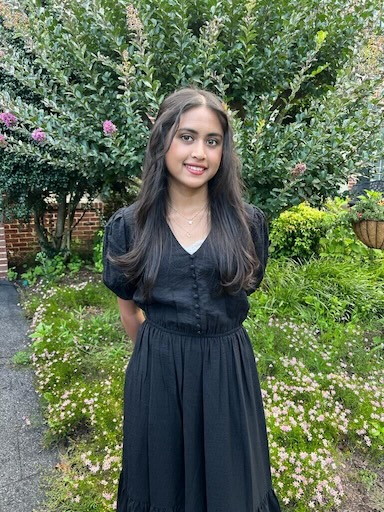
Safiya Alam
Undergraduate Researcher
Microfluidic-enabled isothermal amplification of bacterial DNA.
Julie Karasik
Undergraduate Researcher
Microfluidic-enabled isothermal amplification of bacterial DNA.
Mason Epstein
Undergraduate Researcher
Optimized fabrication of thermoplastic microfluidic chips for bacteria analysis.
James Murbach
Undergraduate Researcher
Next-generation bioaerosol collection and characterization from human breath.
Aditi Madabushi
Undergraduate Researcher
Nanogap trapping and concentration for Raman-based antibiotic susceptibility testing.
Contact
Maryland MEMS & Microfluidics Lab
Fischell Institute for Biomedical Devices
5113 A. James Clark Hall
University of Maryland
College Park, MD 20742
Direct lab inquiries to Prof. Don DeVoe (PI)